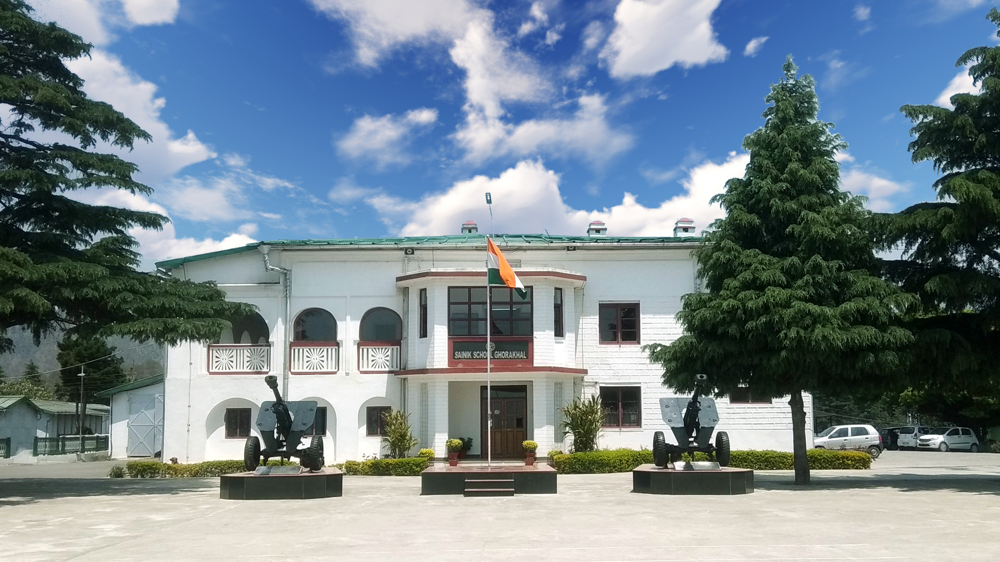

Sainik School Ghorakhal, located near Nainital was established on 21 march 1966 on magnificent
estate of Nawab of Rampur. The name 'Ghorakhal' relates the events in 1857 when a British General
in a desperate bid to escape the revolutionaries of Awadh, strayed into this area and his horse while
drinking water from nearby pond died, therefore the name Ghora (Horse) Khal (pond). The Ghorakhal estate
was presented to General Wheeler in 1870 by the British Rulers. In 1921, then Nawab of Rampur, Maj Gen,
His Highness, Alijah, Amirul Umrah, Nawab, Sir Syed Mohammed Hamid Ali, Khan Bahadur, purchased this Estate.
After the abolition of the privy purses in post Independent India, the State Government (then Uttar Pradesh)
purchased the Estate from the Nawab of Rampur in March 1964 and later Sainik School Ghorakhal was established
on 21 March 1966.
MESSAGE FROM THE PRINCIPAL'S DESK
Sainik School Ghorakhal located amidst majestic mountains and surrounded with breath-taking scenic beauties near Nainital has come a long way to be a premier educational institution of the country. The aim of this sainik school is to prepare boys academically, physically and psychologically to enter into the National Defence Academy, Khadakwasla.At same time school environment also provides ample opportunities to its students to flourish in all walks of life as well. The collaborative endeavor of the cadets, teachers and parents is at the core of learning trial followed by our pupils. In this Cradle of Excellence, team SSGK firmly believes that life’s lessons cannot be taught merely in the confines of a classroom: only, its discovery can be facilitated. Fully cognizant of this fact, each of our cadets, the future leaders of the Nation, continues to be chiseled with a ‘cutting edge’ in the challenging scenario of the morrow. It is this objective that we filled the entire session with a plethora of curricular and extracurricular activities.Establishing and maintain a positive school and classroom climate has been the focus of the school administration as it helps to encourage self-discipline’s self discipline is all that a cadet requires in achieving everything he is capable of School environment focused on discipline also provides the essential conditions for caring, support,clear expectations and guidance that nurture healthy student development and motivation